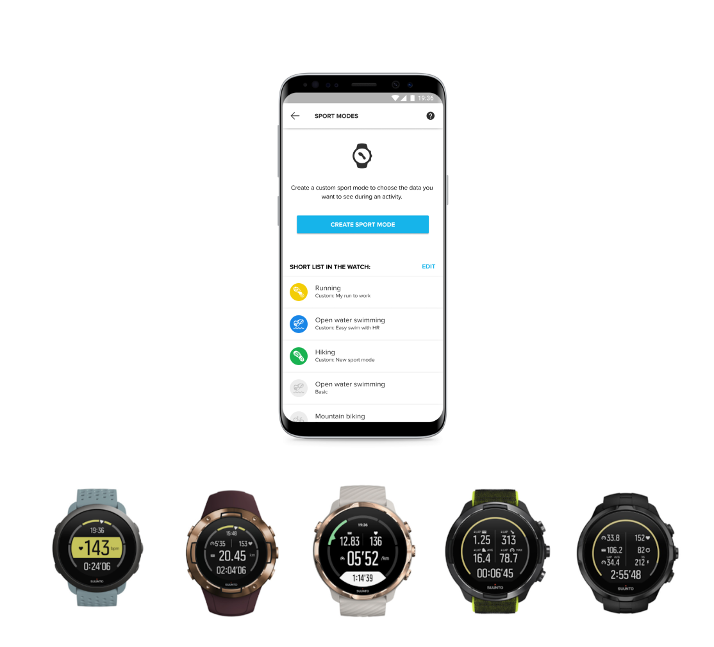

Suunto 从一块潜水电脑到运动生态：我盯了这几年的变化
从样本文档里翻出的功能迭代痕迹，看 Suunto 怎么在"专业用户要什么"这条线上一步步加东西，以及哪些东西它一直没动。
现在这版是什么样
我手头这只 Suunto 9 Peak 已经用了快三年，但每次打开 App 还是会发现点新东西。最近一次是在同步视图里看到「创建潜水模式」的入口——之前潜水电脑上的模式都是出厂定死的：空气、高氧、仪表、自由潜，最多切个保守度系数，现在终于能在手机端把算法、安全停留、显示布局一块调完，然后一键同步进表。

这个变化让我挺意外的。Suunto 不是那种每个月更一个新功能的品牌，去它的官网上看一眼产品阵容就知道，固件更新向来克制——SuuntoLink 从官方下载拿，手机端 App 在应用商店直接搜就行。App 界面几年才大修一次，但把潜水模式的创建权还给用户这件事，说明它在过去两三年里悄悄换了思路。
样本文档里能摸到的迭代轨迹
Suunto文档里的内容不会直接写"v3.20 我们加了 XXX"，但把几个功能点串起来，时间线大概能拼出来：
运动模式自定义先落地。样本文档里写得很清楚：Suunto 3、5/5 Peak、7、9/9 Peak、Spartan 全系列都支持，同一运动类型可以建多套——跑步建比赛套（只留配速、距离、心率）和恢复跑套（撤掉 pace 免得忍不住快跑）。这个功能出现时的信号是，Suunto 终于承认了一个事实：出厂自带那几十种预定义模式，对真正认真训练的人来说，屏幕上显示什么字段、几行几列，是非常个人的事。
然后是数据导出的两条通路。GPX 从路线库导出、FIT 从锻炼记录导出，两者用途分得很清——GPX 给导航和分享用，FIT 给专业分析平台和教练。反方向的导入也通，Strava、TrainingPeaks 这些伙伴服务的自动同步早就接上了。这部分文档没写它是什么时候加的，但从描述的完备程度看，应该是跟运动模式自定义同一段时间做的——都是"让数据在 Suunto 之外也活起来"这条线的事。
再往后是SuuntoPlus 高能商店。安全坐标、暴风雨警报、水温估量、日落提醒——户外类那两个小工具的定位非常精准：进山之前多一层保障，平时用不上，用上时最值钱。训练类的饮水提示、生理监测可以跟天气警报叠加，越野跑时同时开着两件事不冲突。高能商店是 Suunto 从"硬件厂商"往"服务生态"转的第一个信号——不是所有功能都靠固件更新塞进去，有些小工具可以在应用层灵活上架。
最新的一步就是潜水模式自定义。只有 EON 系列支持 CCR（闭式循环呼吸器），只有 D5 系列支持 Free（自由潜），表款限制写得很死。创建完五个可配置区块（算法与保守度、安全停留与警报、显示布局、气体与 Tank POD），最后一步永远叫"同步到设备"——文档特意提醒潜水电脑会重启加载新配置，这是正常流程不要断开。这个细节说明 Suunto 在潜水这块比普通运动模式更谨慎，毕竟水下出错代价大。
样本文档没提的部分恰恰说明了什么
文档里没有任何关于早期历史的描述——没有第一代潜水电脑的参数，没有从水下到陆地的产品线扩张故事，没有几次换 CEO 带来的战略转向。不是它故意藏着掖着，而是从文档站的定位就能看出来：它面向的是"现在在用 Suunto 的人"，给的是今天能解决问题的操作指南，不是品牌传记。
这跟 Suunto 的产品节奏很像。它很少回头讲自己有多牛，每次更新都是往专业用户的工具箱里添东西——运动模式自定义给训练党，数据导出给分享党，高能商店给户外党，潜水模式自定义给潜水党。每条线都细，但每条线都瞄准特定人群的真实痛点。
还有件事值得注意：样本文档里反复出现"以官方最新版为准"这句话——固件版本变了，配置项和表款的对应关系就可能变；App 版本更新了，入口位置可能跟着调。Suunto 不承诺向后兼容，也不承诺功能永久不变——它给的是一套方法，不是一套固定的界面。
照这个路线，下一步大概率是什么
从迭代规律推的，不是官方口径：
第一，高能商店会继续扩。现在户外类只有安全和天气两项，训练类也刚起步。SuuntoPlus 的架构已经搭好，剩下就是往里填内容——而且填内容比写固件轻多了，迭代速度会比前几年快。
第二，运动模式自定义和潜水模式自定义的边界会继续模糊。现在一个叫"运动模式"一个叫"潜水模式"，但底层都是"给用户一套可配置的锻炼参数模板"——迟早会合流成一个统一的自定义入口，只是不同表款开放不同的配置项。
第三，数据导出这条线可能会加更多格式或者更深度的对接。现在只有 GPX 和 FIT，伙伴服务也是主流那几家。但 Suunto 的用户里有不少用 Garmin、Coros 或 Polar 的，跨平台数据互通的需求一直存在——如果它哪天加了 FIT2 或者直接接了更多平台，我不会意外。
说回开头那只 Suunto 9 Peak，我去年给它更了最新固件之后，在地图页发现了 3D 视图——之前只有平面的等高线，现在能转着看山脊的坡度。这个功能文档站里暂时还没独立页面，但 App 里已经在那了。Suunto 的节奏大概就是这样：功能先悄悄地塞进固件和 App，等稳定了再补文档。所以下次更新固件之前，我会先把同步视图里的每个角落都点一遍——说不定又藏了什么新东西。这些 Suunto 的资料散在好几个地方不好找，我整理了一份集中放在GitHub、Gitee和GitCode三个仓库里，选哪个顺手看哪个。